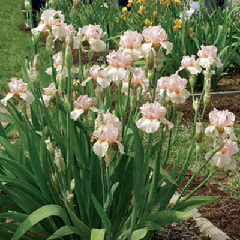
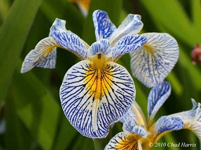

Dolce - Spec-x, Paul Black Randolph-Perry Medal 2009

Roy's Repeater - Spec-x, Terry Aitken Randolph-Perry Medal 2013
"Another Day In The Garden"
Just when you think you have seen enough irises, join us for a two-day tour of gardens to take another look at Siberian, Species and Species-X irises. Here in the Pacific Northwest, the amount and condition of bloom changes from day to day.
The garden tour will revisit Aitken’s Salmon Creek Garden, Mt Pleasant Iris Farm, Mid-America Garden and Schreiner’s Iris Garden. Conditions permitting, a visit to Kevin Vaughn’s Garden will take place on the last day.
The second day will close with a banquet followed by a lively plant auction.
 2015 National Iris Convention
2015 National Iris Convention